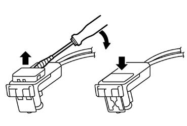
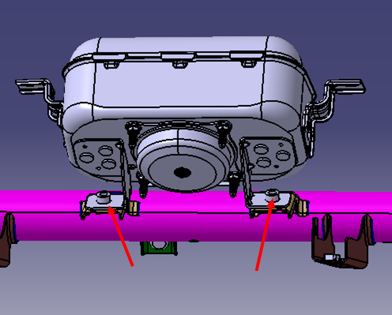
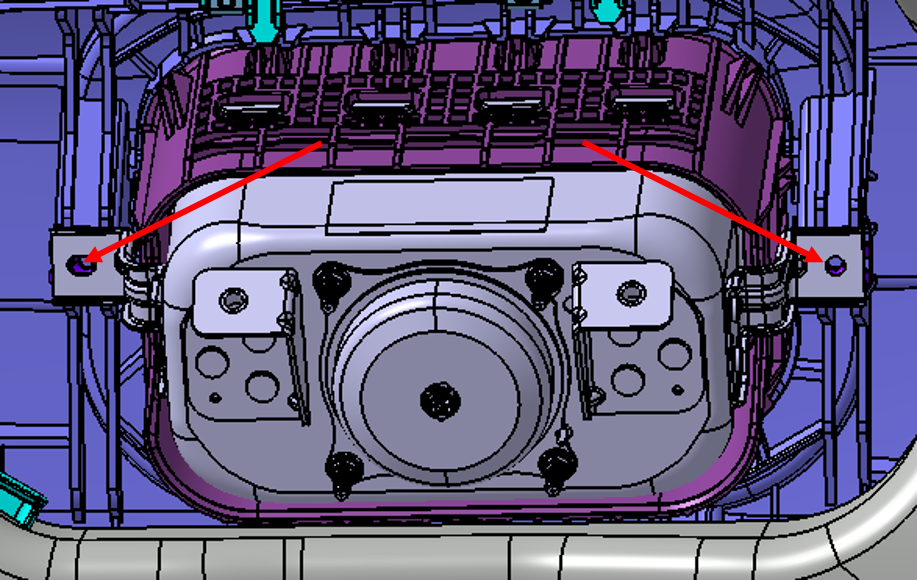
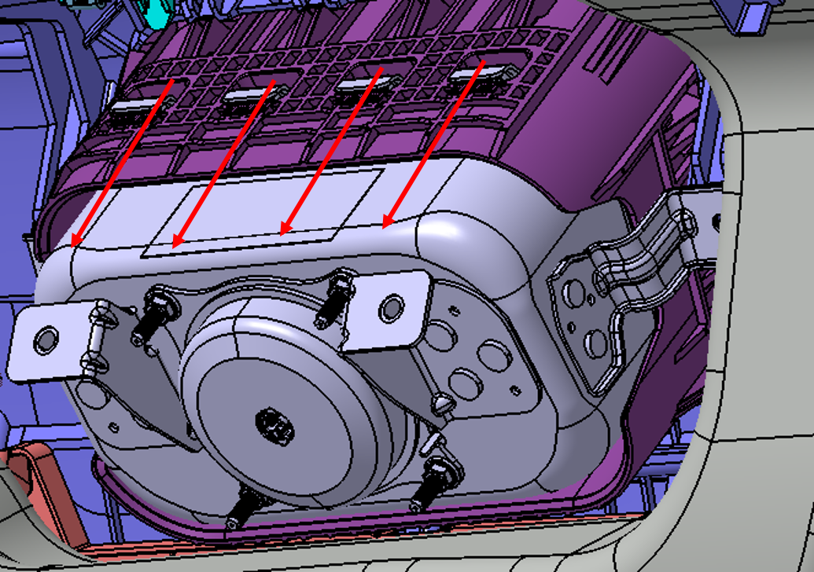

Снятие
Снять перчаточный ящик и контроллер мультимедийной системы. См. Снятие и установка панели приборов
Отсоединить электрический разъем жгута проводов Фронтальная подушка безопасности переднего пассажира.

Выкрутить болты крепления Фронтальная подушка безопасности переднего пассажира к рулевой опоре.
Момент затяжки: 10 ± 1 N.m

Снять панель приборов, см. Снятие и установка панели приборов
Открутить гайки крепления Фронтальная подушка безопасности переднего пассажира к панели приборов.
Момент затяжки: 9 ± 1 N.m

Извлечь Фронтальная подушка безопасности переднего пассажира из отверстий крепления крюков каркаса подушки безопасности, а затем вынять ее.

Установка
Установка выполняется в порядке, обратном снятию.